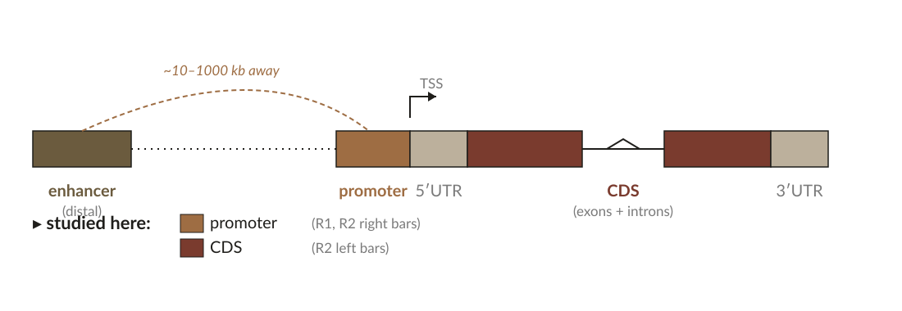
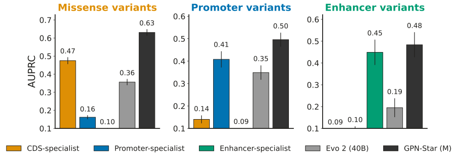
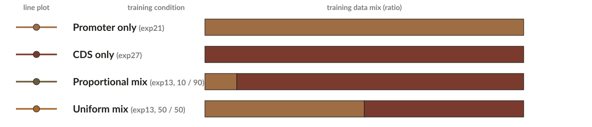
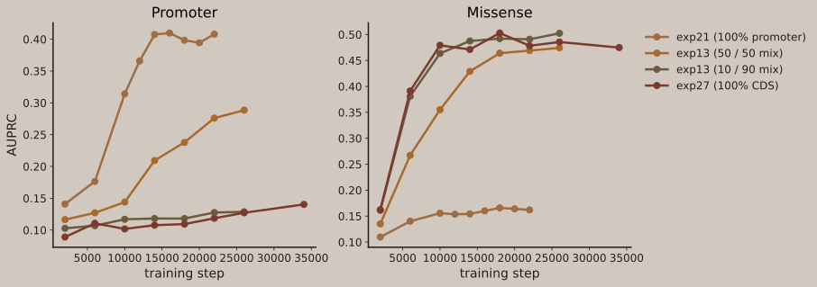
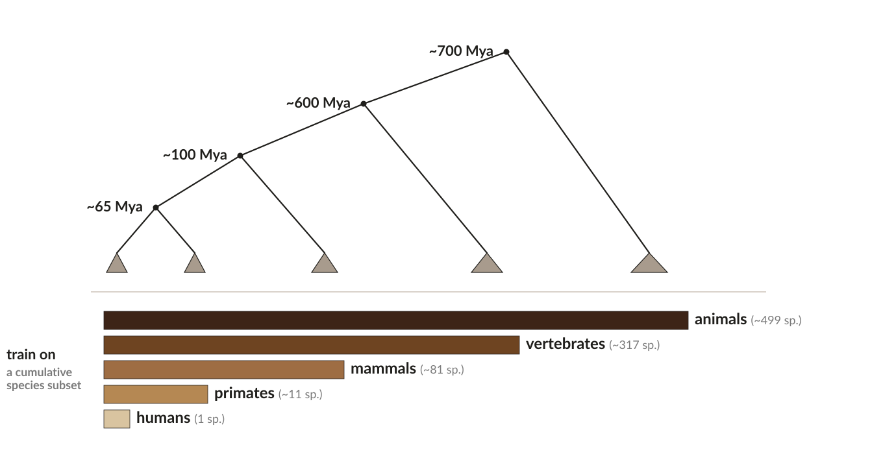

Data curation strategies for genomic language models
A.Approach

gLM benchmarks reward scale. But what we care about — small functional regions, distant evolutionary signal — lives in slivers of the genome. What if curation outranks scale?
We ask three questions
- Region. Can a small region-specific model match large whole-genome and multi-species generalists on its region?
- Mixture. When training on multiple regions, do we mirror the natural ratio or rebalance to 50 / 50?
- Timescale. Which evolutionary depth — humans, primates, mammals, vertebrates, animals — does each region prefer?
Training
- Architecture: Qwen decoder-only Transformer, fixed objective P(xt | x<t), forward + reverse-complement averaging.
- Sizes: 6M – 1.7B parameters; we vary what we train on, not how large.
- Data: per-experiment subsets (promoter, CDS, enhancer, mixtures, multi-species).
Evaluation
- Benchmark: ClinVar Mendelian variants (pathogenic vs benign), per consequence subset.
- Score: log-likelihood ratio log P(alt) / P(ref) at the variant position, zero-shot.
- Metric: AUPRC, with per-cluster bootstrap SE.
B.Functional regions

Region specialists reach the same ballpark as whole-genome and multi-species generalists, each on its own region.
Mendelian AUPRC — 3 specialists + 2 generalists on missense, promoter, and enhancer variants (#27, #21, #136)

- Each specialist matches the strongest generalists on its trained region.
- The 40B Evo 2 doesn't dominate any panel — scale alone doesn't win.
- Region-coding the training data is sufficient for region-specific tasks.
Balanced sampling rescues the under-represented region.
exp13 mixture sweep — AUPRC vs training step (#13)


- Proportional sampling (natural 10 / 90 ratio) under-serves the rare region — promoter AUPRC stays low.
- Uniform 50 / 50 lifts promoter AUPRC into specialist range, with little cost on missense.
- One mixed model can serve both regions — no per-region training needed.
C.Evolutionary timescales

Promoters peak at the mammals timescale.
Promoter AUPRC vs evolutionary timescale (#55)

- Promoter signal peaks at mammals (~100 Mya) — broader is worse.
- Suggests promoter regulatory grammar is largely mammal-specific.
CDS keeps improving out to the animals timescale.
CDS AUPRC vs evolutionary timescale (#58)

Compute generously provided by the Google TPU Research Cloud.
Code & experiments: github.com/Open-Athena/marin-dna · Contact: gonzalo.benegas@openathena.ai